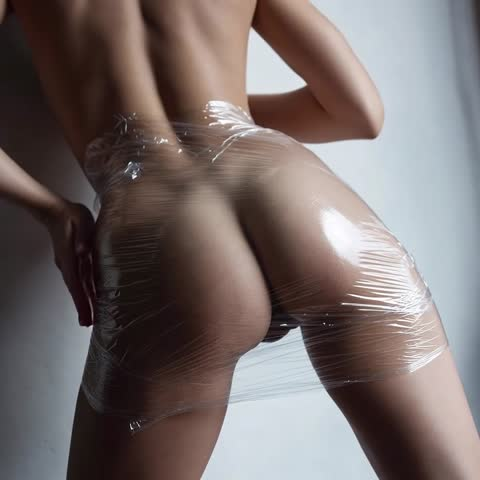
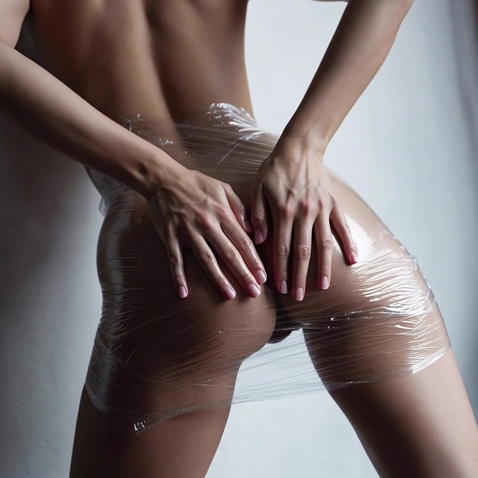
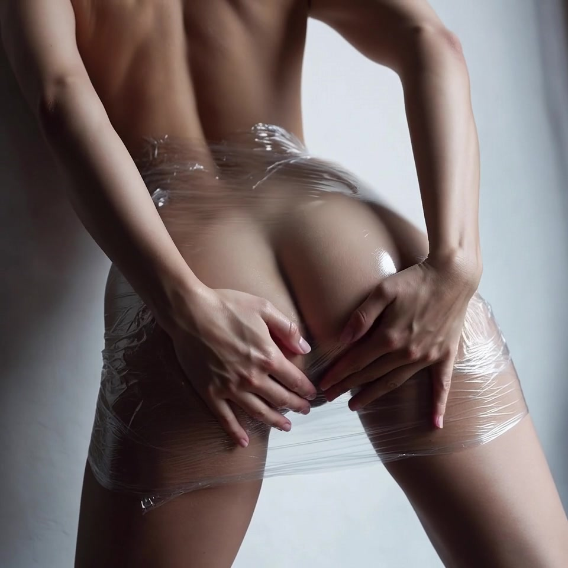
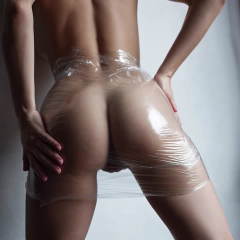
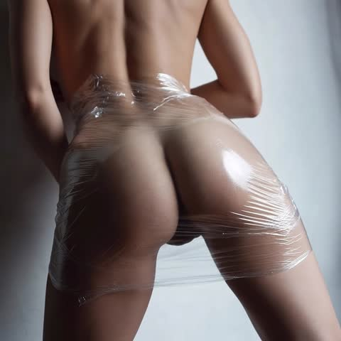
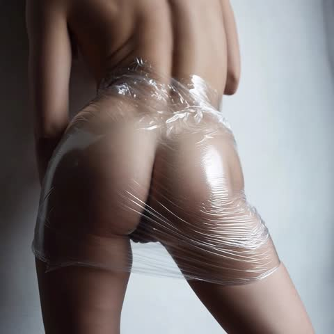

v2 · Study #001 · Free production
Ceran Wrap Free Studio
Clean saran (no scrap/garbage) · extreme close-up outer anatomy detail · longer multi-scene video blueprints for Grok Imagine + free still engine.
New capabilities
- ✦ Clean wrap — remove scrap / dark fabric / garbage under plastic
- ✦ Close-up anatomy — outer form, folds, wrap stretch, micro-detail
- ✦ Longer videos — multi-scene scripts (15–60s) ready for Grok Imagine
- ✦ Free stills via Pollinations FLUX (no key)
- ✦ Copy prompts for Grok when quota returns
Free still + prompt builder
Generate free stills now. Use the same enhanced prompt for Grok video later.
Select a mode and build…
ResultReady
Free still appears here · Pollinations FLUX
Longer video builder
Build multi-scene scripts similar to Study #001 — longer, with close-up anatomy beats. Paste into Grok Imagine when video quota is available. Free stills can preview each beat.
Build a long video prompt…
Tip: Grok imagine_text_to_video handles multi-scene internally when you paste one continuous prompt. Prefer 6–15s per request if rate-limited; chain longer by repeating with “continue / next shot”.
Study #001 frames





